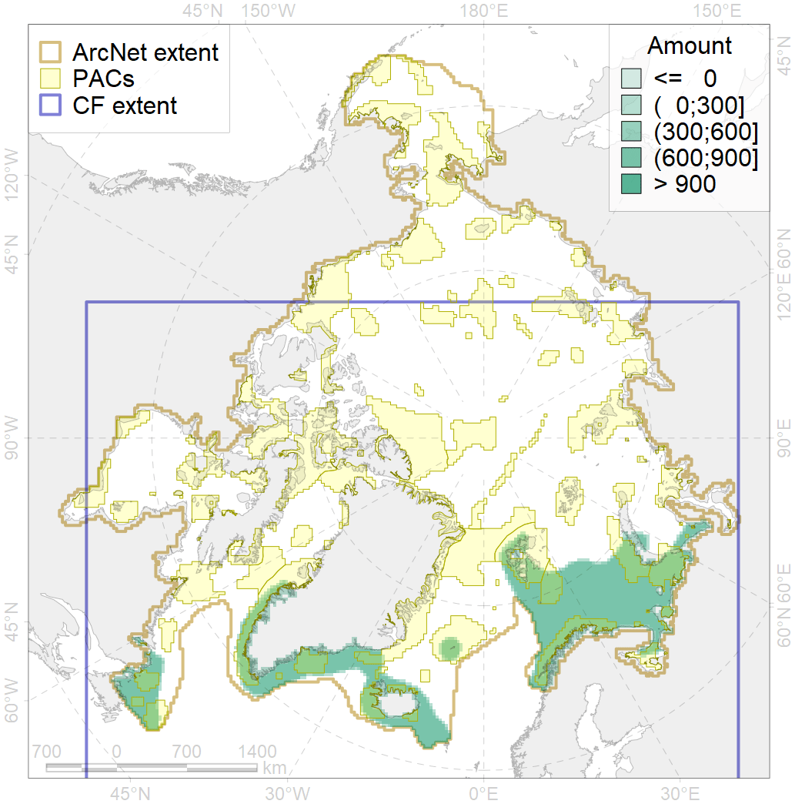
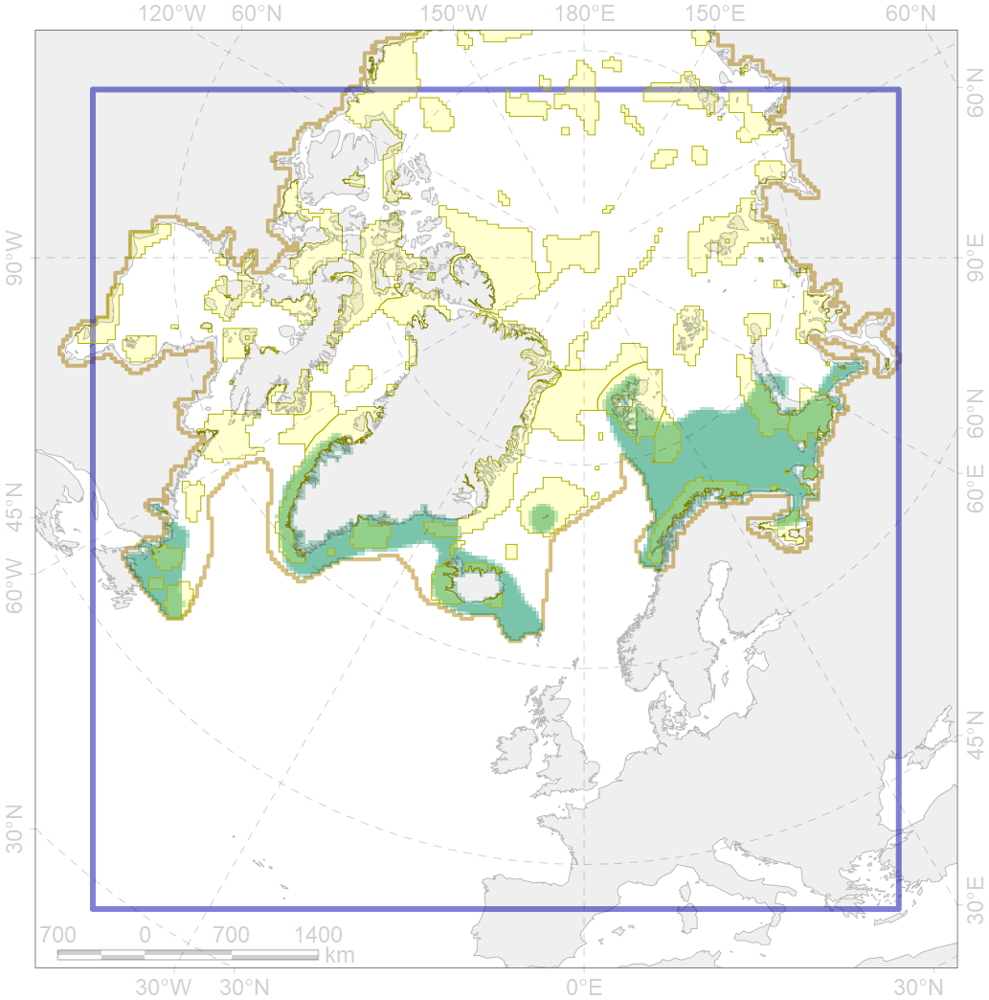

4049

| CF ID | 4049 |
| CF Name | Range of the Haddock (Melanogrammus aeglefinus) |
| Time Period | 1950-2010s |
| Source(s) | Pethon 2005; Bogstad et al., 2008; Whienerhoither et al., 2011; Karamushko, Popova in Reshetnikov, 2013; Mecklenburg et al., 2018 |
| Seasonality | January-December |
| Depth Horizon | 0-200 |
| Methodology | Compiled from literature sources based on field observations |
| Author Name | N. Chernova |
| Notes | |
| Conservation Target Set in the Scenario | 0.06 |
| Conservation Target Achieved in the Scenario | 0.377 (Scenario: 627.7%) |
| PAC ID | Proportion in the PAC | Contribution to ArcNet Target Achievement | PAC’s Contribution to the Achieved Target |
|---|---|---|---|
| 18 | 0.1% | 0.9% | 0.1% |
| 20 | 4.2% | 67.1% | 10.7% |
| 21 | 3.6% | 50.9% | 8.1% |
| 23 | 0.5% | 6.8% | 1.1% |
| 24 | 0.1% | 2.2% | 0.4% |
| 25 | 0.2% | 2.4% | 0.4% |
| 26 | 0.6% | 7.2% | 1.1% |
| 27 | 5.5% | 76.4% | 12.2% |
| 30 | 3.1% | 49.4% | 7.9% |
| 31 | 2.9% | 44.2% | 7.0% |
| 32 | 1.2% | 14.3% | 2.3% |
| 34 | 1.6% | 25.6% | 4.1% |
| 37 | 0.2% | 1.7% | 0.3% |
| 38 | 2.2% | 31.7% | 5.0% |
| 39 | 0.5% | 7.2% | 1.2% |
| 40 | 0.1% | 1.3% | 0.2% |
| 41 | 0.5% | 4.7% | 0.7% |
| 42 | 2.8% | 41.6% | 6.6% |
| 43 | 0.2% | 2.5% | 0.4% |
| 44 | 4.2% | 65.7% | 10.5% |
| 78 | 0.0% | 0.3% | 0.0% |
| 79 | 1.8% | 24.2% | 3.9% |
| 80 | 0.5% | 7.2% | 1.1% |
| 81 | 1.6% | 22.6% | 3.6% |
| inner | 38.1% | 557.8% | 88.9% |
| outer | 59.7% | 69.9% | 11.1% |